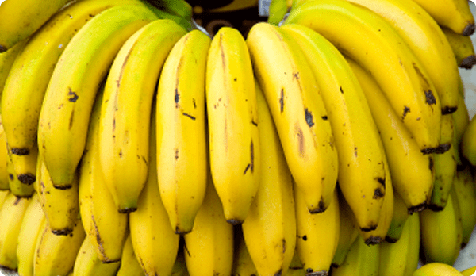

It is a popular dessert banana in the Philippines. It was first described as Musa paradisiaca Lacatan in the 19th century by Francesco Manuel Blanco in his Flora de Filipinas. The Spanish botanist was using the binomial nomenclature system developed by Carl Linneaus to name species.
In the nomenclature system specific to cultivated bananas that superseded it, the cultivar has been alternately presented as a diploid (AA genome group), a classification supported by chromosome counts using meristem tissue from the male bud, or as a triploid (AAA genome group). A molecular and cytological analysis of the Lakatan accessions at the ITC places the cultivar in the AAA genome group.